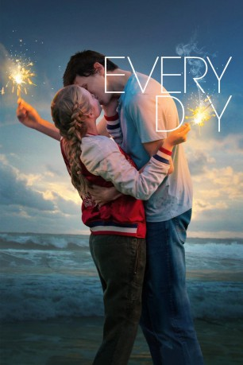

gesehen am 06.01.2019
gesehen am 06.01.2019Alternativ: Every Day gesehen am 06.01.2019
 
 IMDB-Wertung: 6.4 / 10
IMDB-Wertung: 6.4 / 10  Metascore:
Metascore: 
Rhiannon ist eine normale 16 jährige Jugendliche, doch dann verlieb sie sich mysteriöse Seele namens „A“. „A“ belebt jeden morgen einen anderen Körper eines 16- jährigen Jungen oder Mädchens, was es für Rhiannon sehr schwierig macht, sie wiederzufinden. Troz dieser Probleme spüren eine einzigartige Verbindung zueinander und versuchen mit aller Kraft, sich deswegen nicht zu verlieren.
Jahr: 2018
Dauer: 97 Minuten
FSK: 6
Land: USA Studio: Orion PicturesTonspuren: DTS - ,
Untertitel: Deutsch,
Auflösung: 1080p (1920x800) Größe: 6471 MB
Regisseur: Michael Sucsy
Drehbuch: Jesse Andrews, David Levithan
Soundtrack: Elliott Wheeler
Darsteller:
 Angourie Rice als Rhiannon / A
Angourie Rice als Rhiannon / A Justice Smith als Justin / A
Justice Smith als Justin / A Jacob Batalon als James / A
Jacob Batalon als James / A Owen Teague als Alexander / A
Owen Teague als Alexander / A Maria Bello als Lindsey
Maria Bello als Lindsey Michael Cram als Nick
Michael Cram als Nick Martin Roach als Reverend Poole
Martin Roach als Reverend Poole Danielle Bourgon als Michael's Mom
Danielle Bourgon als Michael's MomDatei: X:\2018(G-M)\Letztendlich sind wir dem Universum egal (2018, FSK6, 1920x800).mkv seit 08.06.2018
Festplatte: HD 2018(G-Z)-2019(A-Z)
 Es gibt insgesamt 138 Filme in der Gruppe '2018(G-M)'
Es gibt insgesamt 138 Filme in der Gruppe '2018(G-M)'